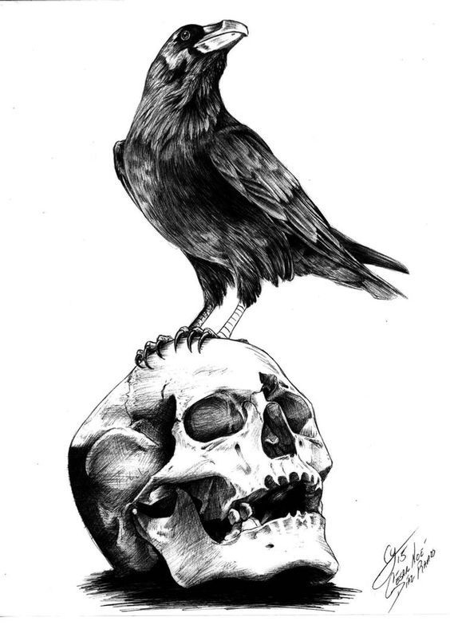

Kruk
Raz w północnej, głuchej dobie, gdym znużony siedział sobie Nad księgami dawnej wiedzy którą wieków pokrył kurz - Gdym się drzemiąc chylił na nie, usłyszałem niespodzianie Lekkie, ciche kołatanie, jakby u drzwi moich tuż. "To gość jakiś - wyszeptałem. - Puka snadź przy drzwiach mych tuż; Nic innego chyba już."
Ach - pamiętam, jakby wczora - była przykra grudnia pora, Głownie mrąc to cień rzucały, to blask jakichś krwawych zórz. Tęsknom czekał, by świt biały błysł, bo księgi nie sprawiały Ulgi mej boleści stałej, odkąd znikł mój anioł stróż, Dziewczę słodkie, które dzisiaj zwie Lenorą anioł - stróż... Tu bez nazwy ona już!
Strach zdejmował mnie nieznany, pełen grozy niezbadanej, Kiedy u drzwi zaszeleścił purpurowy kotar plusz; By ukoić serca trwogę, rzekłem sobie: "Pojąć mogę: To podróżny - zgubił drogę - zbłąkał się śród śnieżnych wzgórz. W drzwi me puka, zbłądziwszy pośród białych śnieżnych wzgórz." Więc nabrawszy męstwa wstałem, z ugrzecznieniem mówiąc całem: "Panie albo pani, błagam, nie obrażaj się ni chmurz, bo zasnąłem ze zmęczenia, a twe lekkie uderzenia w drzwi mojego tu schronienia nie zbudziły mnie. Więc cóż w tym dziwnego, żem nie słyszał?" Tu otwarłem drzwi - i cóż? Ciemność w krąg - nic więcej już.
Patrząc w mrok ten na wsze strony, stałem trwożny i zdumiony, Rojąc mary, jakich dotąd głąb nie znała ludzkich dusz. Lecz milczenie głuche trwało, ciszy nic nie przerywało, Tylko lekki szept nieśmiało drgnął: "Lenora?" - gdzieś tuż ,tuż. Tom ja szepnął i - "Lenora!" - wyszemrało echo tuż. Tylko to, nic więcej już.
Powróciwszy do pokoju, w niesłychanym już rozstroju, Posłyszałem znów stukanie, jakby gdzieś przy ścianie wzdłuż. "Pewnie - rzekłem - coś kołacze w okno; wiatry snadź tułacze? Zaraz, co jest, zobaczę, nie bij, serce, ni się trwóż. Tak to wiatr - nic więcej już!"
Otworzyłem okno zatem... Szumiąc skrzydły, z majestatem, Wleciał ciężko kruk wspaniały, jakby czarny piekieł stróż. Nie pozdrowił mnie ukłonem, okiem powiódł w krąg zamglonem I siadł z pańskim jakimś tonem pośród dwóch kamiennych kruż. Na pallady biuście przy drzwiach, pośród dwóch kamiennych kruż. Usiadł tam - nic więcej już.
Ptak ten sprawił, że przy całem rozsmętnieniu mem musiałem Rozśmiać się z poważnej nader jego miny: "Tyś nie tchórz, Widzę, stary, chmurny ptaku, co - choć piór już ani znaku Na twym czubie - szukasz szlaku śród posępnych nocy mórz? Mów, jak zwą cię na plutońskim brzegu czarnych nocy mórz?" Kruk rzekł na to: "Nigdy już"
Zadziwiłem się nielada, że ptak tak wyraźnie gada, Chociem jego odpowiedzi nie mógł pojąć ani rusz, Boć to przyzna nawet dziecię, że nikt z ludzi dotąd w świecie Nie oglądał chyba przecie ptaka przy drzwiach izby tuż. Ptaka, co by przed nim usiadł na popiersiu przy drzwiach tuż, Z takim mianem: "Nigdy już."
Ale Kruk ten z łysą głową wyrzekł tylko jedno słowo, Jak ci, którzy w jeden wyraz całą głąb wlewają dusz. Potem milczał znów nieśmiele, pióro mu nie drgnęło w ciele, Aż gdym szepnął: "Przyjaciele opuścili mię śród burz. I on też ze dniem mię rzuci, jak Nadzieję pośród burz." Ptak mi odrzekł: "Nigdy już!"
Zadziwiony niewymownie odpowiedzią tak stosownie Wyrzeczoną: "Widać - rzekłem - umie tylko to. A nuż Dar to pana, co w niewoli poznał tylko to, co boli, I w swe pieśni jął powoli echa kłaść przeżytych burz, Aż pieśń każda w smętnej zwrotce brzmiała niby echo burz: "Nigdy, nigdy, nigdy już!"
Lecz, że w rozsmętnieniu całem wciąż się z Kruka śmiać musiałem, Przysunąłem miękki fotel na wprost ptaka, do drzwi tuż, I usiadłszy nań co żywo, jąłem myśli snuć przędziwo, Co to stare, chmurne dziwo, czarne jakby piekieł stróż - Co ten ptak złowróżbny, groźny, czarny jakby piekieł stróż - Mniemał kracząc: "Nigdy już!"
Myśląc, czego to oznaka, nie mówiłem nic do ptaka, Który swe płonące oczy w serce wbijał mi jak nóż. Tak siedziałem, wsparłszy głowę o poduszki fioletowe, A blask lampy światło płowe lał na ich matowy plusz. Ach, niestety, O n a o ten fioletowy, miekki plusz Skroni swej nie oprze już!
Wtem powietrze się zamgliło, jakby wkoło się dymiło Sto anielskich trybularzy, tchnących słodką wonią róż. "Bóg na bóle, co trapiły serce, lek ci zsyła miły - zawołałem - zbierz swe siły i wspomnienia cięzkie zgłusz, wdychaj lek ten i wspomnienia o Lenory stracie zgłusz!" Kruk zakrakał: "Nigdy już!"
"Zły wróżbiarzu - rzekłem - ptaku czy czarciego sługo znaku! Czy cię szatan przysłał tutaj, czy pęd wściekły zagnał burz Na brzeg smutku i boleści, gdzie żal tylko pustka mieści, Gdzie noc każda zgrozę wieści - powiedz, błagam, wzrusz się wzrusz! Jestże, jestże balsam w Gilead? - powiedz, powiedz, wzrusz się, wzrusz!" Rzekł Kruk na to: "Nigdy już!"
"Zły wróżbiarzu - rzekłem - ptaku czy czarciego sługo znaku! Na to niebo, co nad nami, i na Pana ziemi, mórz, Powiedz duszy mej zbolałej, czy w Edenie szczęścia, chwały Znajdzie dziewczę, które biały zwie Lenorą anioł - stróż, Dziewczę święte, słodkie, które zwie Lenorą anioł - stróż?" Kruk mi odrzekł: "Nigdy już!"
"Niech to będzie pożegnanie - krzyknę - ptaku czy szatanie! Precz na burzę, na plutońskie brzegi czarnych nocy mórz! Niech mi żadne czarne pióro nie przypomni, jak ponuro Mroczysz wszystko kłamstwa chmurą! Ruszże się Wyjmij dziób z mojego serca - i rusz się z nade drzwi, rusz! Kruk mi odrzekł: "Nigdy już!"
I kruk wcale nie odlata, jakby myślał siedzieć lata Na Pallady biuście przy drzwiach, pośród dwóch kamiennych kruż, Krwawo lśni mu wzrok ponury, jak u diabła, spod rzęs chmury Światło lampy rzuca z góry jego cień na pokój wzdłuż, A ma dusza z tego cienia, co komnatę zaległ wzdłuż, Nie powstanie - NIGDY JUŻ!